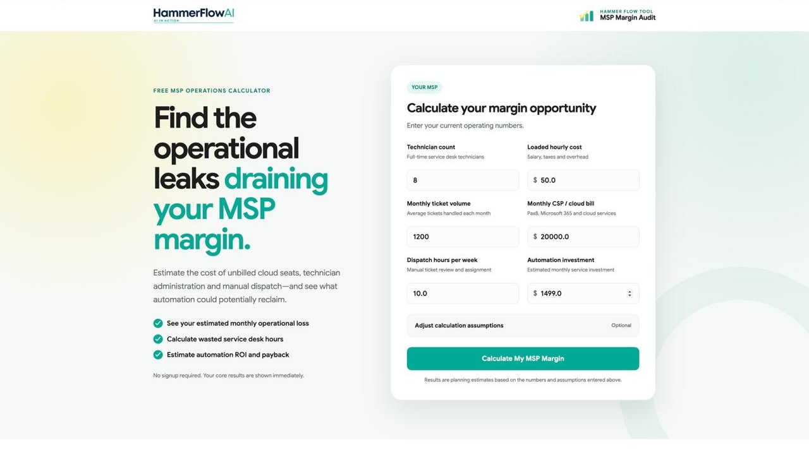

License Leakage
Estimate recurring loss from cloud seats that are active but not billed.
MSP Diagnostic Tool · Functional MVP · Deployment Pending
A focused Rails diagnostic that estimates operational leakage from unbilled cloud seats, technician administration and manual dispatch—then models the hours and value automation could potentially reclaim.
The Problem
MSP leaders often know that technicians spend too much time on administration, dispatch requires repeated manual effort and cloud seats occasionally escape billing. The harder question is what those leaks may be costing each month.
MSP Margin Audit turns a small set of operating assumptions into a transparent planning estimate. The purpose is not to replace an accounting review. It is to create a useful starting point for prioritising workflow improvements.

From Assumptions to Planning Estimate
The calculator uses deterministic arithmetic rather than AI. Each result follows directly from the values entered, making the estimate easy to explain, review and challenge.
Estimate recurring loss from cloud seats that are active but not billed.
Convert repeated non-billable administration time into a monthly labor estimate.
Quantify recurring effort spent reviewing, assigning and routing service work.
Combine the three operating areas into a clear planning total.
Apply the user’s recovery assumption to estimate hours and value that may be reclaimed.
Compare potential reclaimed value with implementation and ongoing automation assumptions.
01 · LICENSE CONTROL
Estimates recurring revenue leakage when active cloud subscriptions are not reflected in client billing.
02 · TECHNICIAN TIME
Converts recurring technician administration into a labor-cost estimate using the operating assumptions entered.
03 · SERVICE COORDINATION
Quantifies the time spent manually reviewing, prioritising, assigning and routing incoming service work.
04 · INVESTMENT VIEW
Models how much value may be reclaimed and compares it with the assumed cost of implementation and maintenance.
The combined monthly impact of the three diagnostic areas.
A simple annualised view for budgeting and prioritisation.
Administrative and dispatch effort expressed as time.
Estimated recoverable time based on the selected assumption.
The labor and licensing value the model suggests may be recoverable.
Estimated return and time to recover the assumed automation investment.
The diagnostic returns a planning estimate as soon as the operating assumptions are submitted.
A saved scorecard receives an opaque token rather than exposing a predictable record identifier.
The report can be delivered by email for internal follow-up or a prospect conversation.
A portable scorecard keeps the assumptions, results and planning caveats together.
A Focused Rails Product
The application keeps business rules inside deterministic calculation logic, validates the submitted assumptions and preserves saved reports for later review. Report delivery is part of the product, not an afterthought.
Form-level validation keeps incomplete or unrealistic submissions from producing misleading output.
Centralized formulas calculate leakage, recovered capacity, value, ROI and payback.
The report preserves the submitted assumptions and resulting scorecard for later review.
Non-sequential public identifiers reduce predictable report discovery.
Saved scorecards can be delivered and exported without changing the underlying calculation.
Validation covers zero values, unusual inputs and private-report behavior.
Focused MVP Scope
MSP Margin Audit currently focuses on unbilled cloud seats, technician administration and manual dispatch. Keeping the scope narrow makes the model understandable and keeps every output tied to a visible input.
The diagnostic uses visible arithmetic rather than AI, making each estimate easier to explain and challenge.
The calculator is designed to show the result first. Saving, emailing or discussing the scorecard follows the useful output.
Results are framed as estimates based on supplied assumptions, not as guaranteed savings or verified financial findings.
End-to-End Ownership
The tool connects the Hammer Flow service model with a practical way to discuss operational waste. I defined the scope, calculation model, report experience, Rails implementation, privacy boundary and edge-case QA.
Technology
The product keeps the model understandable, testable and easy to deploy alongside the broader Hammer Flow work.
Hammer Flow Relationship
MSP Margin Audit helps identify and quantify a potential improvement area. The 15 Hammer Flow workflows remain separate reference implementations for specific MSP operating processes.
Functional MVP · Deployment Pending
The calculation workflow, immediate result, saved scorecard, PDF output, email delivery, private-report protections and edge-case QA are implemented. Public hosting remains the next release step.
Intended Use
The scorecard gives an MSP owner or service leader a clearer starting point for deciding which operating leak deserves deeper investigation and workflow design.
Rails Development · MSP Operations · Diagnostic Products
Review the complete Hammer Flow automation portfolio, explore the rest of my tools or start a conversation about practical MSP workflow improvement.